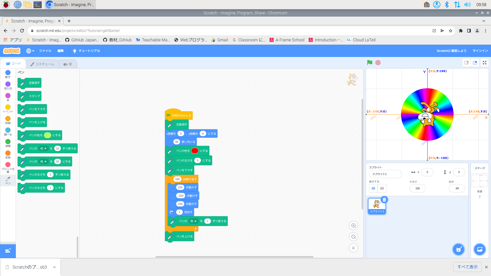
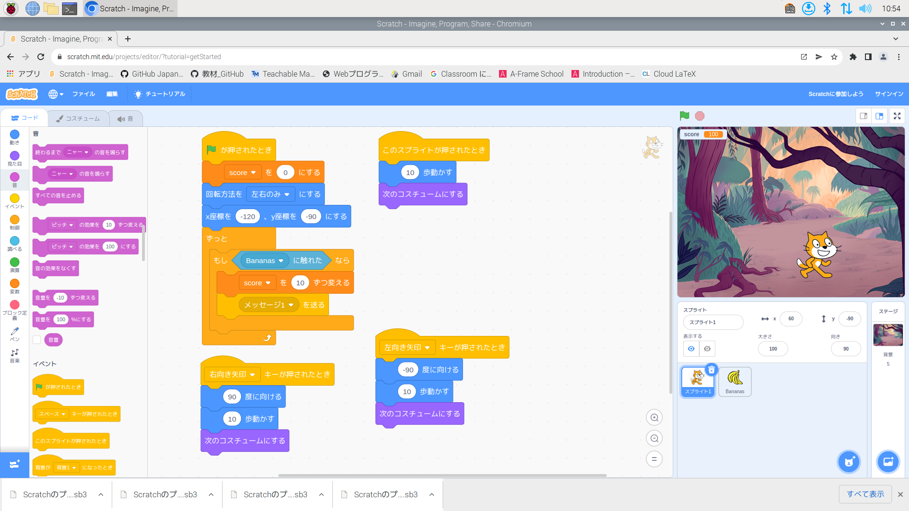
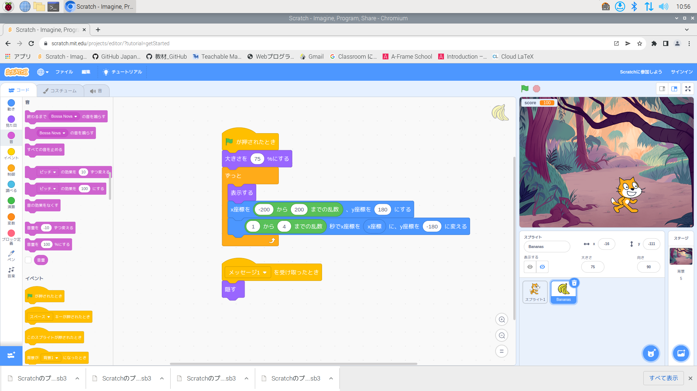
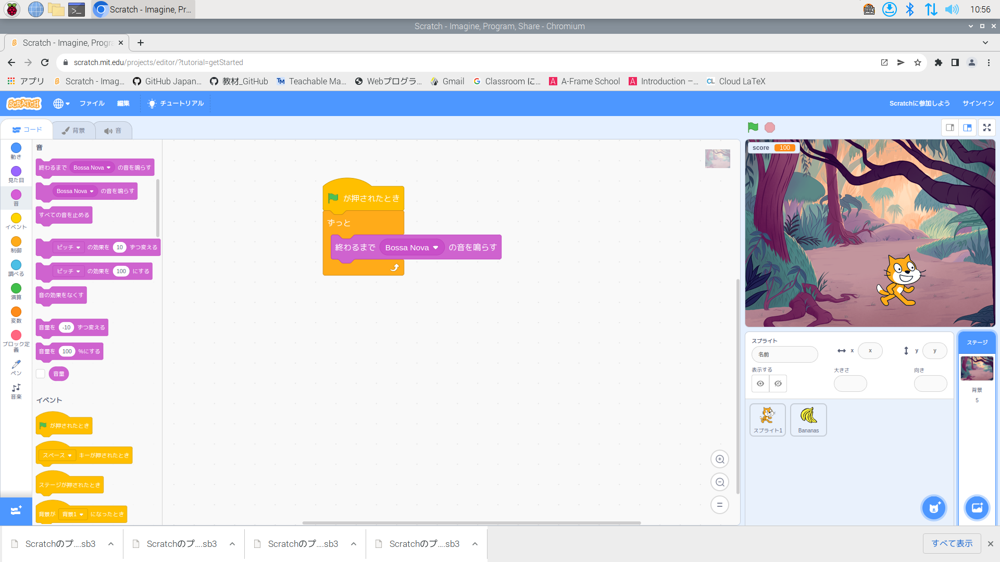

1週目のレポート ： 公大高専１年実習I-1
1組6番 kouooo
第1週目
1-1 サイエンスアート

1.内容
スクラッチを使って線を書くプログラムを書いた。
2.感想
ペンの太さや色の変化する周期を少し変えるだけで
円の色模様が大きく変わっていたのは見ていて面白かったです。
また、スクラッチは初心者の僕でもわかりやすく、簡単だったので
暇なときにもっと遊んでみようと思いました。
1-2 ゲーム



1.内容
猫のキャラクターを操作して落ちてくるものをキャッチするゲームを作った。
2.感想
今まで自分が遊んでいたゲームは複雑なプログラムによって
できていることを知り、ゲーム制作の大変さを実感しました。
1-3 ホームページ作成
私のホームページ
1.内容
自分のホームページをgithubで作成した。
2.感想
今まではウェブサイトを自分で開設すると聞くと、難しそうだと思っていました。
しかし今回の実習でいざやってみると意外とかんたんで、wordでレポートを作る感覚で
作成できたので、とても面白かったです。